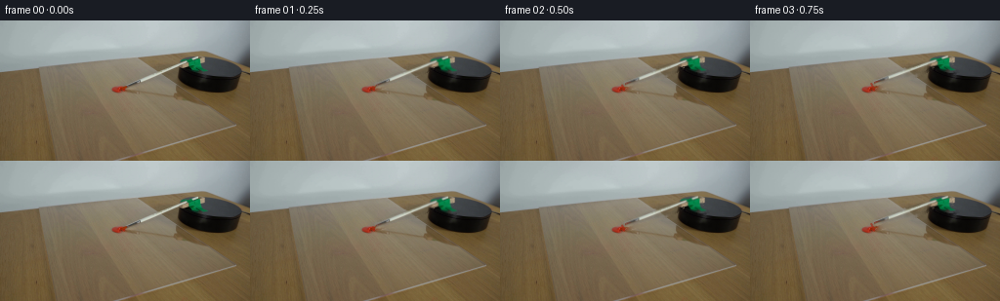
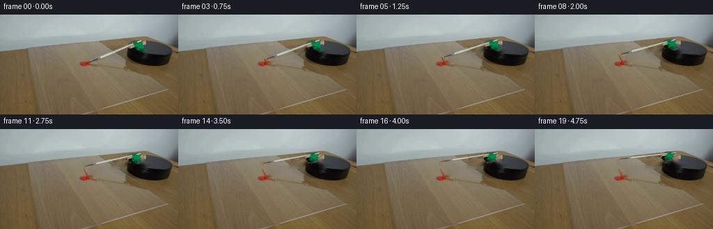

CODING AGENTS AS PIXEL WORLD MODELS
traex/GPT-6.1-Sol · 0130
点击播放 · 原生 RGB 像素
逐轮保存的候选
回放视频、检查图与代码变化。
每份候选均可单独播放。实际图片检查记录在下方工具轨迹中。
候选 01播放与检查图
点击播放 · 原生 RGB 像素


展开代码变化
--- 上一保存版本
+++ 本次保存版本
@@ -0,0 +1,160 @@
+from pathlib import Path
+import numpy as np
+import cv2
+from scipy.ndimage import map_coordinates, gaussian_filter
+from PIL import Image
+import artifact_io
+
+ROOT = Path(__file__).resolve().parent
+W,H=256,144
+
+def build_scene():
+ source=np.array(Image.open(ROOT/'first_frame.png').convert('RGB'),dtype=np.uint8)
+ yy,xx=np.mgrid[:H,:W].astype(np.float32)
+ # Measured shaft axis, in pixels; the camera projects the horizontal
+ # rotating plane to a shallow, slightly oblique ellipse.
+ origin=np.array([201.2,37.6],np.float32)
+ e=np.array([-.923,.385],np.float32)
+ e=e/np.linalg.norm(e)
+ n=np.array([-e[1],e[0]],np.float32)
+ s=(xx-origin[0])*e[0]+(yy-origin[1])*e[1]
+ v=(xx-origin[0])*n[0]+(yy-origin[1])*n[1]
+ # n points to the back/up side of the brush.
+ shaft=(s>=-.7)&(s<64)&(v>-3.0)&(v<3.0)
+ bristle=(s>=63)&(s<78)&(v>-3.0)&(v<2.5)
+ # The green attachment rotates with the brush, not with the backdrop.
+ r,g,b=source.transpose(2,0,1).astype(float)
+ green=(g>r*1.2)&(g>b*1.15)&(xx>182)&(xx<216)&(yy>37)&(yy<55)
+ green=cv2.dilate(green.astype(np.uint8),np.ones((3,3),np.uint8)).astype(bool)
+ mask=(shaft|bristle|green)
+ paint=(r>g+42)&(r>b+55)&(xx<131)&(yy>66)
+ mask &= ~paint
+ # Include the soft, narrow shadow underneath the original shaft, but
+ # leave the stationary platform and its large cast shadow untouched.
+ sh=(s>17)&(s<63)&(v>-5.5)&(v<-2)&(xx<187)
+ erase=mask|sh
+ erase=cv2.dilate(erase.astype(np.uint8),np.ones((3,3),np.uint8))
+ erase[paint]=0
+ background=cv2.inpaint(source,erase*255,5,cv2.INPAINT_TELEA).astype(np.float32)
+ # Build a premultiplied cutout with its original photographic texture.
+ # Its outer edge is inferred from the difference against the restored table.
+ difference=source.astype(np.float32)-background
+ strength=np.linalg.norm(difference,axis=2)
+ alpha=np.clip(strength/42,0,1)*erase
+ core=((s>=0)&(s<63)&(np.abs(v)<.9))|((s>=65)&(s<75)&(np.abs(v)<.8))|green
+ alpha[core]=1
+ alpha[paint]=0
+ # Retain exact antialiased edge RGB, so the unrotated layer reproduces
+ # the source, rather than introducing a new synthetic brush.
+ premul=source.astype(np.float32)-background*(1-alpha[:,:,None])
+ premul*=erase[:,:,None]
+ # Any inpaint fringe belongs to the cutout too. This identity gives
+ # a perfect layer reconstruction at zero rotation.
+ alpha=np.where(erase,alpha,0).astype(np.float32)
+ # Correct tiny zero-alpha residuals used by the reconstruction.
+ z=np.clip((xx-128.0)/73.2,0,1.12)*29.0
+ return source,background,premul,alpha,s,v,z,paint
+
+
+def rotary_matrix(degrees):
+ a=np.deg2rad(degrees)
+ P=np.array([[1.,0.],[.22,.50]])
+ R=np.array([[np.cos(a),-np.sin(a)],[np.sin(a),np.cos(a)]])
+ A=P@R@np.linalg.inv(P)
+ # Height grows linearly towards the handle, which is held above the
+ # acrylic by the clamp. The bristles stay at sheet height.
+ zx=29./73.2
+ zoff=-128*zx
+ # q = screen_position - table_pivot + (0, height)
+ C=np.array([217.,68.])
+ B=np.array([[1.,0.],[zx,1.]])
+ M=A@B-np.array([[0.,0.],[zx,0.]])
+ t=C+A@(np.array([0.,zoff])-C)-np.array([0.,zoff])
+ return np.column_stack((M,t)).astype(np.float32)
+
+
+def transform_point(p,deg):
+ m=rotary_matrix(deg)
+ return m[:,:2]@np.asarray(p)+m[:,2]
+
+
+def paint_trail(bg,degree):
+ # A viscous paint trace is left only over the first part of the sweep.
+ # A few millimeters of the small dollop are picked up and dragged out.
+ S=4
+ out=bg.copy()
+ coverage=np.zeros((H*S,W*S),np.uint8)
+ shiny=np.zeros_like(coverage)
+ end=min(degree,12.8)
+ if end<=0:return out
+ steps=np.linspace(0,end, max(3,int(end*5)))
+ pts=[]
+ for angle in steps:
+ p=transform_point([126.9,68.5],angle)
+ # Small downward yielding of the loaded hairs during contact.
+ p[1]+=1.15*np.exp(-angle/4.7)
+ pts.append(p)
+ for k in range(1,len(pts)):
+ a=steps[k]
+ taper=max(.07,1-a/13.4)
+ width=.20+1.8*taper**.65
+ p0=tuple(np.round(pts[k-1]*S).astype(int)); p1=tuple(np.round(pts[k]*S).astype(int))
+ cv2.line(coverage,p0,p1, int(190*taper**.23),max(1,int(width*S)),cv2.LINE_AA)
+ if a<8:
+ q0=tuple(np.round((pts[k-1]+[.1,-.45])*S).astype(int))
+ q1=tuple(np.round((pts[k]+[.1,-.45])*S).astype(int))
+ cv2.line(shiny,q0,q1,int(70*taper),1,cv2.LINE_AA)
+ a=cv2.resize(coverage,(W,H),interpolation=cv2.INTER_AREA).astype(float)/255
+ hi=cv2.resize(shiny,(W,H),interpolation=cv2.INTER_AREA).astype(float)/255
+ yy,xx=np.mgrid[:H,:W]
+ variation=2*np.sin(xx*2.3+yy*.3)+2*np.sin(yy*1.9)
+ color=np.stack([156+variation,41+variation*.4,21+variation*.2],-1)
+ out=out*(1-a[:,:,None])+color*a[:,:,None]
+ out+=hi[:,:,None]*np.array([42,22,15])
+ return out
+
+
+def generate():
+ source,bg,fg,alpha,s,v,z,paint=build_scene()
+ frames=[source.copy()]
+ # Constant low-speed clockwise motor rotation: the bristles contact the
+ # near edge of the dollop immediately, then leave it behind on the sheet.
+ omega=6.0 # degrees per second
+ for i in range(1,20):
+ degree=omega*i/4
+ M=rotary_matrix(degree)
+ scene=paint_trail(bg,degree)
+ # Slight removal of paint from the contacted upper-right edge; the
+ # much larger central drop remains fixed on the clear acrylic.
+ yy,xx=np.mgrid[:H,:W]
+ loss=np.exp(-((xx-127.8)**2/3.1+(yy-68.0)**2/1.9))*min(1,degree/6)*.19
+ wood=np.array([139.,126.,103.])
+ scene=scene*(1-loss[:,:,None])+wood*loss[:,:,None]
+ loaded=fg.copy()
+ # Pigment coats the outer bristles after contact, with visible dark
+ # hair striations. No red is transferred to the white handle.
+ coat=np.clip((s-70)/7,0,1)*np.clip((79-s)/2.5,0,1)
+ coat*=np.exp(-(v/.98)**4)*min(1,degree/3.5)
+ coat*=alpha
+ redness=np.zeros_like(loaded)+np.array([153.,38.,17.])
+ redness+=np.sin(s*4.1+v*9)[:,:,None]*np.array([7.,3.,2.])
+ loaded=loaded*(1-coat[:,:,None]*.88)+redness*(alpha*coat*.88)[:,:,None]
+ # A tiny amount of subframe averaging models ordinary exposure,
+ # without changing the time step or camera position.
+ accum=np.zeros_like(scene)
+ for offset in [-.12,0,.12]:
+ mm=rotary_matrix(max(0,degree+offset))
+ a=cv2.warpAffine(alpha,mm,(W,H),flags=cv2.INTER_LINEAR,borderMode=cv2.BORDER_CONSTANT)
+ obj=cv2.warpAffine(loaded,mm,(W,H),flags=cv2.INTER_LINEAR,borderMode=cv2.BORDER_CONSTANT)
+ accum+=scene*(1-a[:,:,None])+obj
+ frame=np.clip(accum/3,0,255).round().astype(np.uint8)
+ frames.append(frame)
+ frames=np.stack(frames)
+ assert np.array_equal(frames[0],source)
+ artifact_io.save(frames,ROOT)
+ (ROOT/'.tmp').mkdir(exist_ok=True)
+ Image.fromarray(np.clip(bg,0,255).astype(np.uint8)).save(ROOT/'.tmp/background.png')
+ Image.fromarray(np.uint8(alpha*255)).save(ROOT/'.tmp/object_alpha.png')
+ np.save(ROOT/'.tmp/rgb_frames.npy',frames)
+
+if __name__=='__main__':generate()
候选 02播放与检查图
点击播放 · 原生 RGB 像素

展开代码变化
--- 上一保存版本
+++ 本次保存版本
@@ -51,6 +51,16 @@
# Any inpaint fringe belongs to the cutout too. This identity gives
# a perfect layer reconstruction at zero rotation.
alpha=np.where(erase,alpha,0).astype(np.float32)
+ # The end of the hair bundle is already hidden by the paint drop in
+ # frame zero. Reconstruct only that short, occluded section, so that
+ # the moving tip actually sweeps through the center of the paint.
+ hair_width=1.05*np.clip((88-s)/9.0,.12,1.0)
+ extension=np.clip((hair_width-np.abs(v))/.7+.5,0,1)
+ extension*=np.clip((s-75.5)/2,0,1)*np.clip((88-s)/1.5,0,1)
+ strand=4*np.sin(v*15+s*.45)
+ hair=np.stack([145+strand,44+strand*.5,23+strand*.3],-1)
+ premul=premul*(1-extension[:,:,None])+hair*extension[:,:,None]
+ alpha=alpha*(1-extension)+extension
# Correct tiny zero-alpha residuals used by the reconstruction.
z=np.clip((xx-128.0)/73.2,0,1.12)*29.0
return source,background,premul,alpha,s,v,z,paint
@@ -90,14 +100,14 @@
steps=np.linspace(0,end, max(3,int(end*5)))
pts=[]
for angle in steps:
- p=transform_point([126.9,68.5],angle)
+ p=transform_point([122.5,70.0],angle)
# Small downward yielding of the loaded hairs during contact.
p[1]+=1.15*np.exp(-angle/4.7)
pts.append(p)
for k in range(1,len(pts)):
a=steps[k]
taper=max(.07,1-a/13.4)
- width=.20+1.8*taper**.65
+ width=.18+1.65*taper**.65
p0=tuple(np.round(pts[k-1]*S).astype(int)); p1=tuple(np.round(pts[k]*S).astype(int))
cv2.line(coverage,p0,p1, int(190*taper**.23),max(1,int(width*S)),cv2.LINE_AA)
if a<8:
候选 03播放与检查图
可观测工具轨迹
实际执行的命令与返回图片。
命令 1exit 0
/bin/bash -lc "ls -la && cat prompt.txt && printf '\\n---RULES---\\n' && cat GENERATION_RULES.md"
命令 2exit 0
/bin/bash -lc "cat artifact_io.py && python - <<'PY'
from PIL import Image
import numpy as np
im=np.array(Image.open('first_frame.png').convert('RGB'))
print(im.shape)
# representative RGB grid
for y in range(0,144,6):
print(y, ' '.join('%02x%02x%02x'%tuple(p) for p in im[y,::8]))
PY"命令 3exit 0
/bin/bash -lc "python - <<'PY'
from PIL import Image
import numpy as np
im=np.array(Image.open('first_frame.png'))[:,:,:3].astype(int)
# Map colors into semantic rough classifications.
for y in range(30,90):
s=''
for x in range(60,250):
r,g,b=im[y,x]
if r>1.6*g and r>g+30: c='R'
elif g>r*1.3 and g>b*1.25: c='G'
elif max(r,g,b)<30:c='#'
elif max(r,g,b)<55:c='d'
elif max(r,g,b)<85 and abs(r-b)<20:c='s'
elif min(r,g,b)>155:c='L'
elif b>r:c='c'
elif r-b>28 and r-g>10:c='w'
else:c='.'
s+=c
print('%3d '%y+s)
PY"命令 4exit 0
/bin/bash -lc "python - <<'PY'
from PIL import Image
import numpy as np
im=np.array(Image.open('first_frame.png')).astype(int)
chars=' .,:;irsXA253hMHGS#9B&@'
print('Luminance crop x110:220 y32:78')
for y in range(32,78):
print('%2d '%y+''.join(chars[int((im[y,x]*[.299,.587,.114]).sum()/256*len(chars))] for x in range(110,220)))
print('Bright brush runs:')
for y in range(35,69):
xx=np.where((im[y,:,0]>140)&(im[y,:,1]>140)&(im[y,:,2]>120)&(np.arange(256)>118)&(np.arange(256)<209))[0]
if len(xx):print(y,[(int(x),tuple(im[y,x])) for x in xx])
PY"命令 5exit 0
/bin/bash -lc "python - <<'PY'
from PIL import Image
import numpy as np
im=np.array(Image.open('first_frame.png')).astype(int)
for y in range(58,75):
print('\\ny',y)
for x in range(112,153):
print('%d:%d,%d,%d'%(x,*im[y,x]),end=' ')
print()
print('\\nRoot RGB:')
for y in range(36,53):
print(y, ' '.join('%d:%02x%02x%02x'%(x,*im[y,x]) for x in range(184,216)))
PY"命令 6exit 0
/bin/bash -lc "python - <<'PY' import importlib.util for a in ['cv2','scipy','numpy','PIL']: print(a,importlib.util.find_spec(a) is not None) PY"
命令 7exit 0
/bin/bash -lc "python - <<'PY'
import numpy as np
from scipy.ndimage import map_coordinates
from PIL import Image
im=np.array(Image.open('first_frame.png')).astype(float)
p=np.array([201.2,37.6]);e=np.array([-0.923,0.385]);n=np.array([.385,.923])
for s in [0,6,12,18,25,35,45,55,61,64,67,70,73,76,79]:
xy=p+s*e+np.arange(-3.5,4,.5)[:,None]*n
rgb=np.stack([map_coordinates(im[:,:,c],[xy[:,1],xy[:,0]],order=1) for c in range(3)],-1).astype(int)
print('s',s,'center',np.round(p+s*e,1),' : ', ' '.join('%d/%d/%d'%tuple(r) for r in rgb))
PY"命令 8exit 0
/bin/bash -lc "cat > generate.py <<'PY'
from pathlib import Path
import numpy as np
import cv2
from scipy.ndimage import map_coordinates, gaussian_filter
from PIL import Image
import artifact_io
ROOT = Path(__file__).resolve().parent
W,H=256,144
def build_scene():
source=np.array(Image.open(ROOT/'first_frame.png').convert('RGB'),dtype=np.uint8)
yy,xx=np.mgrid[:H,:W].astype(np.float32)
# Measured shaft axis, in pixels; the camera projects the horizontal
# rotating plane to a shallow, slightly oblique ellipse.
origin=np.array([201.2,37.6],np.float32)
e=np.array([-.923,.385],np.float32)
e=e/np.linalg.norm(e)
n=np.array([-e[1],e[0]],np.float32)
s=(xx-origin[0])*e[0]+(yy-origin[1])*e[1]
v=(xx-origin[0])*n[0]+(yy-origin[1])*n[1]
# n points to the back/up side of the brush.
shaft=(s>=-.7)&(s<64)&(v>-3.0)&(v<3.0)
bristle=(s>=63)&(s<78)&(v>-3.0)&(v<2.5)
# The green attachment rotates with the brush, not with the backdrop.
r,g,b=source.transpose(2,0,1).astype(float)
green=(g>r*1.2)&(g>b*1.15)&(xx>182)&(xx<216)&(yy>37)&(yy<55)
green=cv2.dilate(green.astype(np.uint8),np.ones((3,3),np.uint8)).astype(bool)
mask=(shaft|bristle|green)
paint=(r>g+42)&(r>b+55)&(xx<131)&(yy>66)
mask &= ~paint
# Include the soft, narrow shadow underneath the original shaft, but
# leave the stationary platform and its large cast shadow untouched.
sh=(s>17)&(s<63)&(v>-5.5)&(v<-2)&(xx<187)
erase=mask|sh
erase=cv2.dilate(erase.astype(np.uint8),np.ones((3,3),np.uint8))
erase[paint]=0
background=cv2.inpaint(source,erase*255,5,cv2.INPAINT_TELEA).astype(np.float32)
# Build a premultiplied cutout with its original photographic texture.
# Its outer edge is inferred from the difference against the restored table.
difference=source.astype(np.float32)-background
strength=np.linalg.norm(difference,axis=2)
alpha=np.clip(strength/42,0,1)*erase
core=((s>=0)&(s<63)&(np.abs(v)<.9))|((s>=65)&(s<75)&(np.abs(v)<.8))|green
alpha[core]=1
alpha[paint]=0
# Retain exact antialiased edge RGB, so the unrotated layer reproduces
# the source, rather than introducing a new synthetic brush.
premul=source.astype(np.float32)-background*(1-alpha[:,:,None])
premul*=erase[:,:,None]
# Any inpaint fringe belongs to the cutout too. This identity gives
# a perfect layer reconstruction at zero rotation.
alpha=np.where(erase,alpha,0).astype(np.float32)
# Correct tiny zero-alpha residuals used by the reconstruction.
z=np.clip((xx-128.0)/73.2,0,1.12)*29.0
return source,background,premul,alpha,s,v,z,paint
def rotary_matrix(degrees):
a=np.deg2rad(degrees)
P=np.array([[1.,0.],[.22,.50]])
R=np.array([[np.cos(a),-np.sin(a)],[np.sin(a),np.cos(a)]])
A=P@R@np.linalg.inv(P)
# Height grows linearly towards the handle, which is held above the
# acrylic by the clamp. The bristles stay at sheet height.
zx=29./73.2
zoff=-128*zx
# q = screen_position - table_pivot + (0, height)
C=np.array([217.,68.])
B=np.array([[1.,0.],[zx,1.]])
M=A@B-np.array([[0.,0.],[zx,0.]])
t=C+A@(np.array([0.,zoff])-C)-np.array([0.,zoff])
return np.column_stack((M,t)).astype(np.float32)
def transform_point(p,deg):
m=rotary_matrix(deg)
return m[:,:2]@np.asarray(p)+m[:,2]
def paint_trail(bg,degree):
# A viscous paint trace is left only over the first part of the sweep.
# A few millimeters of the small dollop are picked up and dragged out.
S=4
out=bg.copy()
coverage=np.zeros((H*S,W*S),np.uint8)
shiny=np.zeros_like(coverage)
end=min(degree,12.8)
if end<=0:return out
steps=np.linspace(0,end, max(3,int(end*5)))
pts=[]
for angle in steps:
p=transform_point([126.9,68.5],angle)
# Small downward yielding of the loaded hairs during contact.
p[1]+=1.15*np.exp(-angle/4.7)
pts.append(p)
for k in range(1,len(pts)):
a=steps[k]
taper=max(.07,1-a/13.4)
width=.20+1.8*taper**.65
p0=tuple(np.round(pts[k-1]*S).astype(int)); p1=tuple(np.round(pts[k]*S).astype(int))
cv2.line(coverage,p0,p1, int(190*taper**.23),max(1,int(width*S)),cv2.LINE_AA)
if a<8:
q0=tuple(np.round((pts[k-1]+[.1,-.45])*S).astype(int))
q1=tuple(np.round((pts[k]+[.1,-.45])*S).astype(int))
cv2.line(shiny,q0,q1,int(70*taper),1,cv2.LINE_AA)
a=cv2.resize(coverage,(W,H),interpolation=cv2.INTER_AREA).astype(float)/255
hi=cv2.resize(shiny,(W,H),interpolation=cv2.INTER_AREA).astype(float)/255
yy,xx=np.mgrid[:H,:W]
variation=2*np.sin(xx*2.3+yy*.3)+2*np.sin(yy*1.9)
color=np.stack([156+variation,41+variation*.4,21+variation*.2],-1)
out=out*(1-a[:,:,None])+color*a[:,:,None]
out+=hi[:,:,None]*np.array([42,22,15])
return out
def generate():
source,bg,fg,alpha,s,v,z,paint=build_scene()
frames=[source.copy()]
# Constant low-speed clockwise motor rotation: the bristles contact the
# near edge of the dollop immediately, then leave it behind on the sheet.
omega=6.0 # degrees per second
for i in range(1,20):
degree=omega*i/4
M=rotary_matrix(degree)
scene=paint_trail(bg,degree)
# Slight removal of paint from the contacted upper-right edge; the
# much larger central drop remains fixed on the clear acrylic.
yy,xx=np.mgrid[:H,:W]
loss=np.exp(-((xx-127.8)**2/3.1+(yy-68.0)**2/1.9))*min(1,degree/6)*.19
wood=np.array([139.,126.,103.])
scene=scene*(1-loss[:,:,None])+wood*loss[:,:,None]
loaded=fg.copy()
# Pigment coats the outer bristles after contact, with visible dark
# hair striations. No red is transferred to the white handle.
coat=np.clip((s-70)/7,0,1)*np.clip((79-s)/2.5,0,1)
coat*=np.exp(-(v/.98)**4)*min(1,degree/3.5)
coat*=alpha
redness=np.zeros_like(loaded)+np.array([153.,38.,17.])
redness+=np.sin(s*4.1+v*9)[:,:,None]*np.array([7.,3.,2.])
loaded=loaded*(1-coat[:,:,None]*.88)+redness*(alpha*coat*.88)[:,:,None]
# A tiny amount of subframe averaging models ordinary exposure,
# without changing the time step or camera position.
accum=np.zeros_like(scene)
for offset in [-.12,0,.12]:
mm=rotary_matrix(max(0,degree+offset))
a=cv2.warpAffine(alpha,mm,(W,H),flags=cv2.INTER_LINEAR,borderMode=cv2.BORDER_CONSTANT)
obj=cv2.warpAffine(loaded,mm,(W,H),flags=cv2.INTER_LINEAR,borderMode=cv2.BORDER_CONSTANT)
accum+=scene*(1-a[:,:,None])+obj
frame=np.clip(accum/3,0,255).round().astype(np.uint8)
frames.append(frame)
frames=np.stack(frames)
assert np.array_equal(frames[0],source)
artifact_io.save(frames,ROOT)
(ROOT/'.tmp').mkdir(exist_ok=True)
Image.fromarray(np.clip(bg,0,255).astype(np.uint8)).save(ROOT/'.tmp/background.png')
Image.fromarray(np.uint8(alpha*255)).save(ROOT/'.tmp/object_alpha.png')
np.save(ROOT/'.tmp/rgb_frames.npy',frames)
if __name__=='__main__':generate()
PY
python generate.py
python - <<'PY'
from PIL import Image
import numpy as np
f=np.load('.tmp/rgb_frames.npy')
b=np.array(Image.open('first_frame.png'))
print('shape',f.shape,'dtype',f.dtype,'first identical',np.array_equal(f[0],b))
for i in [1,3,6,10,15,19]:
dif=np.max(np.abs(f[i].astype(float)-b),axis=2)
ys,xs=np.where(dif>15)
print(i, 'change',len(xs),'bbox',(xs.min(),ys.min(),xs.max(),ys.max()),'mean abs',np.abs(f[i].astype(float)-b).mean())
PY"命令 9exit 0
/bin/bash -lc "python - <<'PY'
import generate
for d in [0,1.5,4.5,9,15,22.5,28.5]:
print(d,[generate.transform_point(p,d).round(2).tolist() for p in [[201.2,37.6],[199,46],[145,61],[128,68],[124,70],[120,71]]])
# print alpha semantic crop final and restoration to ensure clean cutout
import numpy as np
from PIL import Image
ims=[np.array(Image.open('.tmp/background.png')),np.array(Image.open('frames/19.png'))]
for im in ims:
print('\\n')
for y in range(29,76):
line=''
for x in range(113,221):
r,g,b=map(int,im[y,x])
if r>g+42 and r>b+55: c='R'
elif g>r*1.3 and g>b*1.2:c='G'
elif max(r,g,b)<30:c='#'
elif max(r,g,b)<55:c='d'
elif max(r,g,b)<85 and abs(r-b)<20:c='s'
elif min(r,g,b)>153:c='L'
elif b>r:c='c'
elif r-b>28 and r-g>10:c='w'
else:c='.'
line+=c
print('%2d '%y+line)
PY"命令 10exit 0
/bin/bash -lc "python generate.py && python - <<'PY'
from pathlib import Path
import numpy as np
from PIL import Image
p=Path('.')
f=np.load('.tmp/rgb_frames.npy')
assert f.shape==(20,144,256,3) and f.dtype==np.uint8
assert np.array_equal(f[0],np.array(Image.open('first_frame.png').convert('RGB')))
z=np.load('pixels.npz')['pixels']
assert z.shape==(144,256,20)
print('Validated 20 RGB frames, 256x144, 4 fps; frame 00 is exact.')
print('Output:',[(x.name,x.stat().st_size) for x in [p/'pixels.npz',p/'index.html']])
PY"保存候选 3 份；完成命令 10 次；可验证图片返回 0 张。原始 API 响应与完整日志保留在本地。